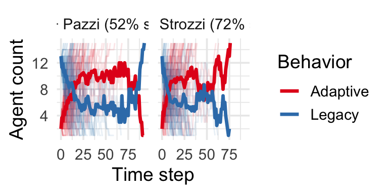

options(repos = c(CRAN = "https://cloud.r-project.org"))
# install.packages("ggnetwork")
# install.packages("pak") # if you don’t already have it; comment out after installation
# pak::pak("css4s/socmod") # ditto2 Agent-based model programming in R
To help design effective sustainability interventions we can deduce which candidate intervention strategies are most effective in a stylized agent-based models implemented and analyzed in silico. To best design these models and understand how they work, it helps to understand our chosen programming language and leverage available software packages that provides useful tools. This includes some select software design concepts, most importantly object-oriented programming. All the interacting agents in agent-based modeling are instances of one or a few classes, which define a certain type of object. In other words, agent-based models are inherently object-oriented, so we close this chapter on some relevant concpets from the theory of object-oriented programming.
2.1 Getting Started with R and RStudio
2.1.1 Install the course package
Before you begin, make sure you’ve installed R and RStudio. The RStudio website provides instructions and download links to do both: https://posit.co/download/rstudio-desktop/.
Next we need to load packages that we use in this document.
# tidyverse
library(ggplot2)
library(dplyr)
Attaching package: 'dplyr'The following objects are masked from 'package:stats':
filter, lagThe following objects are masked from 'package:base':
intersect, setdiff, setequal, unionlibrary(purrr)
# extended tidyverse
library(ggnetwork)
library(socmod)We are going to consider the following situation where Agent 1 is considering installing residential solar (Figure 2.1). Blue lines between agents indicates they are socially acquainted enough to learn from one another, i.e., they are socially connected in a social network.
# Create agents...
# Agent 1 is the focal agent, neighbors 2–4 have different wealth levels (fitness), indicated by the number of dollar symbols each agent has in the drawing.
# We call solar panels here "Adaptive" and not using solar panels the "Legacy" behavior to emphasize the generality of our results.
agent_1 <- Agent$new(1, behavior = "Legacy", fitness = 1, name = "1")
agent_2 <- Agent$new(2, behavior = "Adaptive", fitness = 4, name = "2")
agent_3 <- Agent$new(3, behavior = "Legacy", fitness = 1, name = "3")
agent_4 <- Agent$new(4, behavior = "Legacy", fitness = 2, name = "4") print(agent_2)<Agent>
Public:
add_neighbors: function (...)
advance_behavior: function ()
advance_fitness: function ()
clone: function (deep = FALSE)
degree: function ()
get_attribute: function (key)
get_attributes: function ()
get_behavior: function ()
get_fitness: function ()
get_id: function ()
get_name: function ()
get_neighbors: function ()
get_next_behavior: function ()
get_next_fitness: function ()
initialize: function (id, name = NULL, behavior = "0", fitness = 0)
remove_neighbors: function (...)
set_attribute: function (key, value)
set_attributes: function (attr_list)
set_behavior: function (value)
set_fitness: function (value)
set_name: function (name)
set_neighbors: function (nbrs)
set_next_behavior: function (value)
set_next_fitness: function (value)
Private:
attributes: list
behavior_current: Adaptive
behavior_next: Adaptive
fitness_current: 4
fitness_next: 4
id: 2
name: 2
neighbors: Neighbors, R62.1.2 Quarto Notebooks and Rendering
- Run individual code chunks with:
- Shift + Cmd + Enter (Mac)
- Shift + Ctrl + Enter (Windows)
- These run in the same R session as your console. If you define a variable in a chunk, it will also be available in the console.
- Rendering the full document starts a clean R session.
Try writing and running this in a new .qmd file:
x <- 42Now go to your console and type:
x[1] 42Did it print 42? If so, congrats, you saw the console-notebook connection in action.
The other way to see the results of code blocks is by rendering the document into .html and other formats. We can render the document by either clicking the “Render” button in RStudio or by checking “Render on Save” then saving (see ?fig-render-options), or use hotkey
NOTE: The console and notebook share an environment, which is why code run in the notebook can affect code in the console and vice-versa. This environment is not shared with the rendering process, so when you render a document, none of the code run during rendering will affect the code
2.1.2.1 Web browser method for making PDF of the problem sets
To submit problem sets to Canvas/Gradescope you’ll need to create PDF versions of the Quarto problem set worksheets. To do this, click the icon with an arrow in front of a little window in the Viewer pane in RStudio (?fig-open-in-browser). This will open the rendered document in your web browser. From there, you can print the document to PDF using the print function in your web browser.
2.2 Quickstart using socmod
Here we will do a quick-start example of how to use socmod to make sure everything installed as we expected, and to demonstrate the connection between some theory we covered Monday with the code we’ll be working with in this class.
We are going to consider the following situation where Agent 1 is considering installing residential solar (Figure 2.1). Blue lines between agents indicates they are socially acquainted enough to learn from one another, i.e., they are socially connected in a social network.
# Create agents...
# Agent 1 is the focal agent, neighbors 2–4 have different wealth levels (fitness), indicated by the number of dollar symbols each agent has in the drawing.
# We call solar panels here "Adaptive" and not using solar panels the "Legacy" behavior to emphasize the generality of our results.
agent_1 <- Agent$new(1, behavior = "Legacy", fitness = 1, name = "1")
agent_2 <- Agent$new(2, behavior = "Adaptive", fitness = 4, name = "2")
agent_3 <- Agent$new(3, behavior = "Legacy", fitness = 1, name = "3")
agent_4 <- Agent$new(4, behavior = "Legacy", fitness = 2, name = "4") When we print the agents we see a full listing of the fields, i.e., agent attributes, and agent methods, or functions that are part of the Agent class:
print(agent_2)<Agent>
Public:
add_neighbors: function (...)
advance_behavior: function ()
advance_fitness: function ()
clone: function (deep = FALSE)
degree: function ()
get_attribute: function (key)
get_attributes: function ()
get_behavior: function ()
get_fitness: function ()
get_id: function ()
get_name: function ()
get_neighbors: function ()
get_next_behavior: function ()
get_next_fitness: function ()
initialize: function (id, name = NULL, behavior = "0", fitness = 0)
remove_neighbors: function (...)
set_attribute: function (key, value)
set_attributes: function (attr_list)
set_behavior: function (value)
set_fitness: function (value)
set_name: function (name)
set_neighbors: function (nbrs)
set_next_behavior: function (value)
set_next_fitness: function (value)
Private:
attributes: list
behavior_current: Adaptive
behavior_next: Adaptive
fitness_current: 4
fitness_next: 4
id: 2
name: 2
neighbors: Neighbors, R62.2.2 Combine agents and network into a model
agents <- list(agent_1, agent_2, agent_3, agent_4)
abm <- AgentBasedModel$new(agents = agents, graph = socnet)
ggnetplot(abm$get_network()) +
geom_edges(linewidth=0.1) +
geom_nodes(color = "#008566", size=4) +
geom_nodelabel_repel(aes(label = name), size = 2) +
theme_blank() 2.3 R programming essentials
2.3.1 Basic R: functions, iteration, control flow, and data structures
2.3.2 Object-oriented programming in R with R6
2.3.3 A note on socmod and the tidyverse
The tidyverse is an agglomeration of the ggplot2 data visualization library and several other related data analysis libraries. [tidyverse links: We make extensive use of the following tidyverse libraries. One principle of the tidyverse is good documentation. Here are the libraries provided as hyperlinks that can help for reference or to understand more about how they work:
yo
whatup .] The tidyverse toolkit was one of the strongest reasons for deciding to do our Agent-based Modeling for Sustainability in R. The tidyverse is popular among scientists and engineers, and many others. It provides a wealth of tools to be used in combination with one another for various data science tasks. The popular
ggplot2provides a grammar of graphics where scientific plots are defined through summation of constituent parts, including diferent lines or marks corresponding to data values, labels for the ticks and axes, legend for the meaning of different line or marker styles, and so on. Other important packages from the tidyverse include:- purrr: tools for functional programming in R
- dplyr: data manipulation and analysis using declarative syntax
- tibble: a new version of data.frames customized for data science
Other tidyverse tools include helpful functions for data cleaning and standardization across a wide range of data formats in order to apply statistical analyses. For example, the readr package reads multiple formats into tibbles. The tidyr provides tools for efficient data cleaning, supported by stringr and lubridate for dealing with strings (i.e., text data), dates, and times, which each have their own complications in data science where one has no control over the source data formatting. We, on the other hand, have total control over our data formatting since we ourselves simulate it, so we will not need to use these tools.
socmodadopts this tidyverse approach to programming quantitative analyses. Here is an example of how to use theggplot2package to visualize the output of an agent-based model.
First, let’s create and run an agent-based model of adaptation diffusion among individuals represented by a fully-connected network with population size 20. This could represent something like a large group discussion, or a small party, where some adaptation is being discussed. Assume that 10 of them do the Adaptive behavior, \(A\), and the rest do the Legacy behavior, \(L\). We initialize and run a single simulation trial for the model like so:
ts <- list()
# Create agents.
# agents <- purrr::map2.5 Understanding R Data Types and Functions
2.5.1 Values, Variables, Lists, and Vectors
In R, everything is built on top of a few basic structures:
Values: basic data like numbers (
1,3.14), text ("hello"), or logicals (TRUE,FALSE).Variables: names you assign to values:
a <- 5 name <- "Alice"Vectors: ordered collections of values of the same type:
v <- c(1, 2, 3) names <- c("Alice", "Bob")Lists: collections of elements that can be of mixed type:
mylist <- list(id = 1, name = "Alice", scores = c(10, 9, 8))
2.5.2 From Vectors to Data Frames and Tibbles
You can combine vectors into data frames, where each vector becomes a column. These are like spreadsheets in R.
df <- data.frame(name = c("Alice", "Bob"), score = c(90, 85))We often prefer tibbles (from the tibble package in the tidyverse) for modern workflows:
library(tibble)
Attaching package: 'tibble'The following object is masked from 'package:igraph':
as_data_frametbl <- tibble(name = c("Alice", "Bob"), score = c(90, 85))More on this in later lectures.
2.6 Encapsulation in agent-based modeling
Agent-based modeling depends on encapsulation, meaning Serendipitously, such specification helps us do our job as scientists and engineers here is to manage complexity in social systems to clarify mechanisms that support or inhibit adaptation.
Agents are created as an instance of the socmod Agent *class*, which is a comptuer science term for a template for a collection of data and functions. When we create an instance of a class. In R, classes are defined using the R6 package, which implements an *object-oriented for R, R was not designed for object-oriented programming no built-in library R6 is an object-oriented system for R that allows for defining classes and methods in a way similar to Python. This gives you more explicit control over encapsulation and inheritance compared to R’s S3/S4 systems.
Encapsulation in computer code helps us avoid unnecessary complexity so we can focus on social behavioral complexity that complicates designing sustainability interventions and understanding social behavior. Encapsulation reduces repetition, makes code easier to debug and understand, and encourages modular, clean design. The primary focus of this course is to design interventions to facilitate the widespread adoption of sustainable behaviors using lessons and tools from cognitive and social science. But lessons from cognitive and social science can help us do our research and intervention design jobs better by guiding us to create more ergonomic tools, meaning tools that are easier to quickly pick up and use. We encapsulate computer code, then, because we know, from common sense supported by widely-replicated science, that humans tend to segment information into sets of ~2-8 items for relatively simple subjects, or perhaps ~2-5 things for more complex subjects like ours.
We’ll focus here on two techniques for encapsulation: functions and classes, presented in that order in the following subsections. Functions are reusable chunks of code that perform a specific task. They take inputs (called arguments), perform operations on them, and return outputs. Classes are collections of data and functions (i.e., fields and methods, respectively) about some discrete entity. In socmod, we have the Agent and AgentBasedModel classes. We create these and other objects in R using the R6 package.
2.6.1 Functions
Functions let us encapsulate logic and processes for their reuse.
You define them like this:
square <- function(x) {
return(x^2)
}
square(3) # returns 9[1] 92.6.2 Classes
2.7 Functional programming style
Functional programming is an approach to defining behavior and dealing with transformations of multidimensional data. In functional programming, functions are first-class objects, meaning they can be passed to other functions and arguments. Such functions are called higher-order functions.
2.9 Agent-based model analysis
2.9.1 Agents
2.9.2 Agent-based models
2.9.3 Computational experiments
2.9.4 Data analysis
make_florentine_seed_model <- function(seed_families = c("Medici"),
adaptive_fitness = 1.2,
legacy_fitness = 1,
graph = NULL) {
if (is.null(graph)) {
if (!requireNamespace("netrankr", quietly = TRUE)) {
stop("Please install the 'netrankr' package to access the Florentine families network.")
}
data("florentine_m", package = "netrankr", envir = environment())
graph <- igraph::delete_vertices(florentine_m, which(degree(florentine_m) == 0))
}
nodes <- igraph::V(graph)$name
agents <- purrr::map(nodes, function(family) {
behavior <- if (family %in% seed_families) "Adaptive" else "Legacy"
fitness <- if (behavior == "Adaptive") adaptive_fitness else legacy_fitness
Agent$new(id = family, name = family, behavior = behavior, fitness = fitness)
})
AgentBasedModel$new(agents = agents, graph = graph)
}
trials <- c(
run_trials(50, function() make_florentine_seed_model(c("Medici", "Pazzi")), label = "Medici + Pazzi", stop = fixated),
run_trials(50, function() make_florentine_seed_model(c("Medici", "Strozzi")), label = "Medici + Strozzi", stop = fixated)
)
summary <- summarise_adoption(trials)
summary_by_label <- summarise_by_label(summary)
# plot_summary(summary)
# summary_by_label
#
# library(ggplot2)
# library(dplyr)
# 1. Summarize trial-level outcomes by label
trial_summary <- summarise_by_label(summary)
# 2. Join success rates into summary and update facet labels
summary_labeled <- summary %>%
left_join(trial_summary, by = "label") %>%
mutate(
label_full = paste0(label, " (", round(100 * success_rate), "% success)")
)
# 3. Compute mean curves for overlay
mean_lines <- summary_labeled %>%
group_by(label_full, t, Behavior) %>%
summarise(mean_count = mean(count), .groups = "drop")
# 4. Build plot
p <- ggplot(summary_labeled, aes(x = t, y = count, color = Behavior)) +
# Light individual trial lines
geom_line(aes(group = interaction(trial, Behavior)), alpha = 0.1) +
# Add bold mean lines
geom_line(data = mean_lines, aes(x = t, y = mean_count, color = Behavior),
linewidth = 1.2, inherit.aes = FALSE) +
# # Add text for success rate in corner
# geom_text(
# data = trial_summary,
# aes(x = 0, y = max(summary$count),
# label = paste0(round(100 * success_rate), "% success")),
# color = "black", hjust = 0, vjust = 1.5,
# inherit.aes = FALSE
# ) +
#
facet_wrap(~ label_full) +
xlab("Time step") +
ylab("Agent count") +
scale_color_brewer(palette = "Set1") +
theme_minimal(base_size = 14)
print(p)
2.4 Social learning models
2.4.1 Success-biased learning
Now that we’ve seen how to initialize an agent-based model, let’s make a cell with all the initialization steps together, then run the model using success-biased learning.
Wait, what’s going on here? Where did
success_bias_select_teacher,success_bias_interact, anditerate_learning_modelcome from? They are also provided by thesocmodpackage. The documentation forsocmodis here: https://css4s.github.io/socmod, with this example of success-biased learning here: https://css4s.github.io/socmod/#success-biased-adaptive-learning.2.4.2 Frequency-biased learning
In addition to providing functions for success-biased learning,
socmodalso provides frequency-biased learning functions. To use frequency-biased learning in a single trial, use `run_trial` like so: